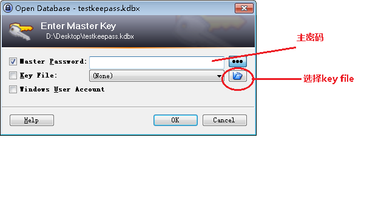

keepass
keepass是一款免费，开源，轻量且易于使用的密码管理器，可以帮助您以安全的方式管理密码。您可以将所有密码放在一个数据库中，该数据库使用一个主密钥或密钥文件锁定。因此，您只需记住一个主密码或选择密钥文件即可解锁整个数据库。使用当前已知的最佳和最安全的加密算法（AES和Twofish）对数据库进行加密。
经过长时间的使用，总结了一套以keepass为核心的简单实用的跨平台的密码管理方式。
keepass一般用法（以windows下为例）
下载
下载keepass的windows客户端。界面如下：
新建
File -> New… 新建一个密码数据库，弹出设置主密码界面，如下：
主密码用于加密整个密码数据库，也就是说只需要记住主密码，即可以打开密码数据库，查看数据库中保存的所有密码，绝对不能遗忘。（有点把所有鸡蛋放在一个篮子的感觉）
其中，master password设置数据库文件的加密密码，show expert options可以设置数据库文件的加密文件。
keepass提供多种方式用于加密数据库文件：
- 密码
数据库文件使用master password加密，只能输入master password后，才可以打开数据库文件查看里面存储的密码。master password一旦遗忘，则数据库文件中存储的密码将无法查看。
- 加密文件
数据库文件使用key file加密，只有提供了key file，才可以打开数据库文件查看里面存储的密码。key file一旦丢失，数据库文件中存储的密码也将无法查看。如果使用此种方式，最好备份key file。
- 密码+加密文件的加密方式
即要想打开数据库文件，除了使用master password以外，还需要提供key file，方可打开数据库文件。如果使用这种方式，最好备份key file。
设置完数据库文件的打开加密方式后，进入数据库文件设置界面，如下
简单设置后，就进入主界面了，如下：
添加新密码
选中某个分组，选择菜单 Edit -> Add Entry，创建一个新的密码，然后选择菜单 File -> Save 保存，或 File -> Save As -> Save To File 另存到其他位置。该文件就是存储密码的数据库文件。
打开keepass密码数据库文件
选择菜单 File -> Open -> Open File，选择保存好的密码数据库文件（应该是.kdbx扩展名），弹出密码输入界面，需要输入keepass数据库文件的主密码（如果设置的是加密文件进入数据库文件的加密，则还需要再选择key file，如图：

多平台使用
由于keepass的密码都存储在密码数据库文件中，所以只要数据库文件支持在各平台间同步，那么多平台使用就可以实现。
这里使用坚果云作为同步工具，将密码数据库文件放在坚果云上，而坚果云有各个平台的客户端，所以可以很方便实现同步。
同步过程
简单描述下同步过程：
- A平台下，使用keepass客户端修改密码数据库文件，并将数据库文件保存在坚果云的工作区，这样一但修改并保存，就可以马上传到云服，而其他平台上的坚果云客户端也会实时将本地工作区的密码数据库文件更新到最新。
- B平台下，由于坚果云客户端的实时同步功能，此时本地工作区的密码数据库文件已经是最新，直接打开即可看到修改后的数据。
冲突解决
一般情况下，同一时间只有一个人在一个平台或者设备上使用密码数据库文件时，不会有冲突问题。但是如果同一时间在不同的设备上同时修改坚果云工作区的密码数据库文件，会导致版本冲突，数据丢失。
目前使用的解决方法就是：
不同的平台使用的密码数据库文件，存放在坚果云工作区的不同目录下，各自使用互不干扰，但是定期进行数据合并。合并选项中可以选择保留两份密码数据库文件中不同的部分，相同部分则保留最后修改的部分。windows下，keepass客户端使用将一个数据库文件导入另一个正在打开的数据库文件中，实现合并，合并选项如下：
不过只要确保同一时间，只有一个人修改密码数据库文件，便不需要考虑冲突的问题，只需要在使用前先把数据库文件更新到最新，然后使用完把最新数据传到坚果云空间上，然后在其他平台使用前，也一样先更新数据库文件再使用即可。